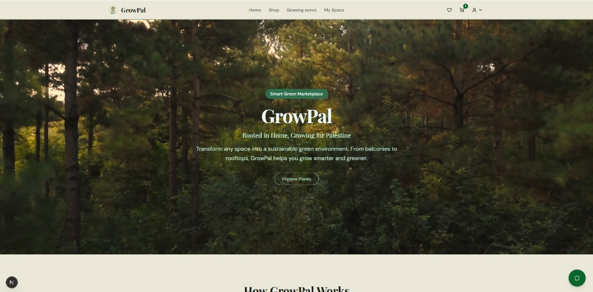
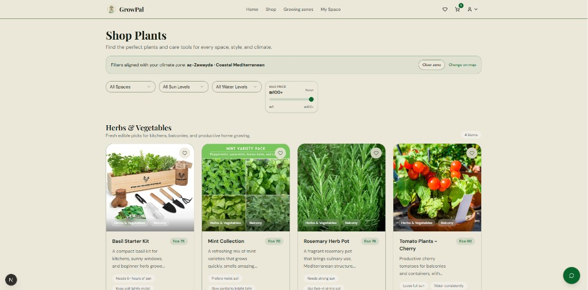
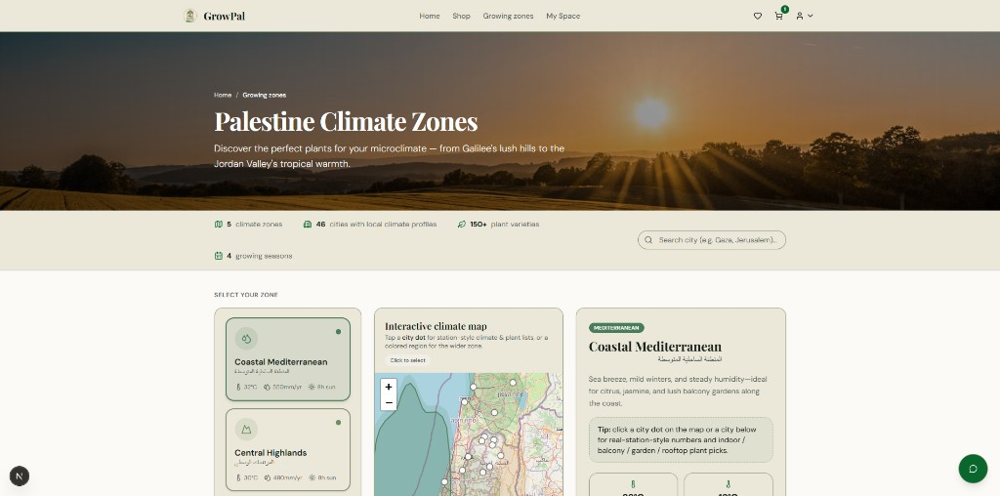

Why this page?
GitHub Pages serves static files only. It cannot run the Next.js server, PHP APIs, or MySQL database. This site is a project overview with screenshots. To use the real application, clone the repository and follow the setup steps in the README.
Screenshots



Run the full project
- Clone github.com/GrowPal-team/GrowPal
- Install dependencies:
npm installandcomposer install - Configure
.envand MySQL (see README) - Start XAMPP, then
npm run dev→http://localhost:3000
Repository
Source code, commit history, and documentation: